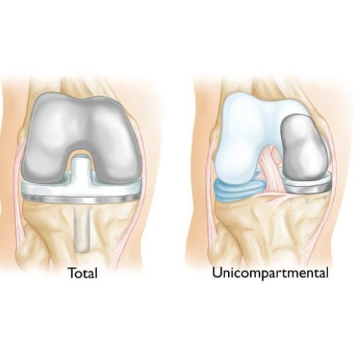

(for russian and italian, scroll down)
Unicompartmental or partial knee replacement is a minimally invasive surgical procedure designed for patients whose arthritis is limited to a single compartment of the knee. Instead of replacing the entire joint, only the damaged portion is resurfaced with high-quality metal and plastic components, preserving as much of your natural knee as possible.

This procedure is ideal if arthritis is confined to one part of the knee, usually the medial (inner) compartment. Your doctor may recommend surgery if: ✅ Non-surgical treatments such as medications, physical therapy, and lifestyle changes have failed. ✅ You experience persistent knee pain and stiffness, especially when walking, climbing stairs, or kneeling. ✅ Your X-rays show arthritis limited to a single compartment of the knee. ✅ Your knee remains stable with healthy ligaments and cartilage in the unaffected areas.
What Causes Arthritis?
Arthritis occurs when the protective cartilage covering the joint surfaces wears down, leading to bone-on-bone contact, pain, and stiffness. Over time, the knee may develop bony spurs and inflammation, further restricting movement. Although the exact cause is unknown, factors that contribute to arthritis include: 🔹 Previous injuries or fractures 🔹 Excess body weight 🔹 Repetitive stress from overuse 🔹 Joint infections 🔹 Inflammatory conditions (e.g., rheumatoid arthritis) 🔹 Genetic predisposition or connective tissue disorders
⚠️ Pain, especially after activity ⚠️ Stiffness and swelling, limiting movement ⚠️ Grinding or clicking sensations in the knee ⚠️ Progressive difficulty in daily activities such as walking or getting up from a chair ⚠️ Changes in knee alignment (knock-knees or bow-legs)
Your doctor will diagnose arthritis through: X-rays – Showing joint space narrowing, bone spurs, or other degenerative changes. Physical examination – Evaluating pain levels, mobility, and joint stability.
1️⃣ Small incision – A minimally invasive approach reduces trauma to surrounding tissue. 2️⃣ Removal of damaged tissue – The diseased meniscus and a small portion of the tibial bone are removed. No bone is removed from the femur. 3️⃣ Placement of a tibial implant – A high-grade plastic component is secured to the tibia using bone cement. 4️⃣ Resurfacing of the femur – The remaining cartilage is removed, and a metal component is cemented in place. 5️⃣ Range of motion testing – The surgeon moves the knee to ensure proper function. 6️⃣ Closure – The incision is closed with sutures, and a sterile dressing is applied.
This procedure offers significant benefits over a full knee replacement, including: ✔️ Smaller incision – Less tissue disruption and a more cosmetic result. ✔️ Minimal blood loss – Reduced surgical impact. ✔️ Faster recovery – Most patients walk with support the same day. ✔️ Less post-operative pain – Quicker return to daily activities. ✔️ Better knee function – More natural feel and range of motion. ✔️ Lower complication rate – Studies show that the risk of major post-operative complications is 50% lower than with total knee replacement.
📅 Hospital Stay: Typically 1–2 days, with some patients discharged the same day. 🩹 Walking: Full weight-bearing with crutches from day 1; most patients use crutches for about 2 weeks. 🏋️ Rehabilitation: A structured physical therapy program for 4–6 months to restore strength and mobility. 🚴 Recommended Activities: Walking, swimming, and cycling are encouraged, but high-impact activities like jogging should be avoided.
While unicompartmental knee replacement is a safe and effective procedure, some risks include: ⚠️ Knee stiffness – Can be managed with rehabilitation. ⚠️ Infection – Rare, but may require antibiotics or further intervention. ⚠️ Blood clots (Deep Vein Thrombosis – DVT) – Preventable with movement and medication. ⚠️ Nerve or blood vessel damage – Uncommon but possible. ⚠️ Implant loosening over time – Proper post-op care can extend implant longevity.
Is a Unicompartmental Knee Replacement Right for You?
If you are struggling with localized knee arthritis and want a faster, less invasive solution with a natural feel, a unicompartmental knee replacement may be the best option for you.
Минимально инвазивное решение для артроза колена с быстрым восстановлением
Одноотделочная или частичная замена коленного сустава – это минимально инвазивная операция, предназначенная для пациентов, у которых артроз поражает только один отдел коленного сустава. Вместо полной замены коленного сустава удаляется только поврежденная часть, а затем она заменяется металлическими и пластиковыми компонентами, сохраняя при этом как можно больше здоровых тканей.
Этот метод подходит пациентам, у которых артроз ограничен одним отделом колена, чаще всего медиальным (внутренним). Ваш врач может порекомендовать операцию, если: ✅ Консервативное лечение (лекарства, физиотерапия, изменение образа жизни) не принесло облегчения. ✅ Вы испытываете постоянную боль и скованность в колене, особенно при ходьбе, подъеме по лестнице или вставании с сидячего положения. ✅ Рентген показывает артроз только в одном отделе коленного сустава. ✅ Колено остается стабильным, а здоровые связки и хрящи в непораженных зонах сохранены.
Почему развивается артроз?
Артроз – это заболевание, при котором суставной хрящ изнашивается, что приводит к трению костей друг о друга, боли и ограничению движений. Со временем в суставе могут образоваться костные выросты (остеофиты), усиливающие воспаление и ограничивающие подвижность. Факторы, способствующие развитию артроза: 🔹 Травмы и переломы в области колена 🔹 Избыточный вес 🔹 Чрезмерные нагрузки на сустав 🔹 Инфекции суставов 🔹 Воспалительные заболевания (например, ревматоидный артрит) 🔹 Генетическая предрасположенность
⚠️ Боль в колене, усиливающаяся после нагрузки. ⚠️ Скованность и отек, ограничивающие подвижность. ⚠️ Чувство «щелчков» или трения в суставе. ⚠️ Постепенное ухудшение способности ходить, вставать или подниматься по лестнице. ⚠️ Деформация колена (варусное или вальгусное искривление ног).
Рентген – Выявляет сужение суставной щели, костные разрастания и другие признаки дегенерации. Осмотр врача – Оценка подвижности, степени боли и стабильности сустава.
1️⃣ Минимальный разрез – Операция выполняется через небольшие разрезы, что снижает травматичность. 2️⃣ Удаление поврежденных тканей – Удаляется мениск и небольшая часть поверхности большеберцовой кости. Бедренная кость остается нетронутой. 3️⃣ Установка имплантата в большеберцовую кость – Вставляется высококачественный пластиковый компонент, который фиксируется с помощью костного цемента. 4️⃣ Обработка бедренной кости – Поврежденный хрящ удаляется, и на его место устанавливается металлический компонент, закрепленный цементом. 5️⃣ Проверка подвижности сустава – Хирург выполняет тестирование, чтобы убедиться в правильном функционировании сустава. 6️⃣ Завершение операции – Разрезы ушиваются, накладывается стерильная повязка.
Этот метод имеет ряд значительных преимуществ: ✔️ Меньший разрез – Минимальное повреждение окружающих тканей. ✔️ Минимальная кровопотеря – Менее травматичная операция. ✔️ Более быстрое восстановление – Большинство пациентов начинают ходить в тот же день. ✔️ Меньше послеоперационной боли – Улучшенный комфорт в период реабилитации. ✔️ Более естественное ощущение – Больше анатомических структур сохраняется. ✔️ Низкий уровень осложнений – Исследования показывают, что риск послеоперационных осложнений в два раза ниже, чем при полной замене коленного сустава.
📅 Госпитализация: Обычно 1-2 дня, в некоторых случаях пациенты могут выписаться в тот же день. 🩹 Ходьба: Разрешается с первого дня после операции, с поддержкой костылей (примерно 2 недели). 🏋️ Физиотерапия: Индивидуальная программа восстановления длится 4-6 месяцев и направлена на восстановление силы и подвижности. 🚴 Рекомендуемые виды активности: Ходьба, плавание и езда на велосипеде безопасны, однако следует избегать бега и ударных нагрузок.
Хотя операция безопасна и эффективна, в редких случаях могут возникнуть следующие осложнения: ⚠️ Скованность в колене – Уменьшается с помощью физиотерапии. ⚠️ Инфекция – Лечится антибиотиками, в редких случаях требуется хирургическое вмешательство. ⚠️ Тромбоз глубоких вен (ТГВ) – Профилактика проводится с помощью специальных препаратов и ранней активности. ⚠️ Повреждение нервов или сосудов – Встречается крайне редко. ⚠️ Разболтанность имплантата – Соблюдение реабилитационных рекомендаций помогает продлить срок службы импланта.
Подходит ли вам одноотделочная замена коленного сустава?
Если вы страдаете от артроза только в одном отделе колена и хотите избежать сложной операции с длительным восстановлением, этот метод может быть идеальным решением.
Un’opzione meno invasiva per l’artrosi del ginocchio con un recupero più rapido
La sostituzione unicompartimentale o parziale del ginocchio è una procedura minimamente invasiva, indicata per i pazienti la cui artrosi è limitata a un solo compartimento dell’articolazione. A differenza della protesi totale di ginocchio, questa tecnica consente di rimuovere solo la parte danneggiata, preservando il resto della struttura articolare e migliorando la sensazione di un ginocchio più naturale.
Questo intervento è consigliato se l’artrosi è confinata a un solo compartimento del ginocchio, in genere il compartimento mediale (interno). Il medico potrebbe raccomandare la chirurgia se: ✅ I trattamenti conservativi come farmaci, fisioterapia e modifiche dello stile di vita non hanno dato sollievo. ✅ Il dolore e la rigidità al ginocchio persistono, specialmente durante la camminata, la salita delle scale o l’inginocchiamento. ✅ Le radiografie mostrano che l’artrosi è limitata a un solo compartimento. ✅ Il ginocchio mantiene una buona stabilità e i legamenti nelle aree non colpite sono sani.
Cause dell’Artrosi
L’artrosi è una condizione in cui la cartilagine articolare si deteriora, causando attrito tra le ossa, dolore e rigidità. Nel tempo, possono formarsi speroni ossei (osteofiti) e l’infiammazione può peggiorare la mobilità. I fattori che contribuiscono all’artrosi includono: 🔹 Pregresse lesioni o fratture al ginocchio 🔹 Eccesso di peso corporeo 🔹 Sovraccarico eccessivo della articolazione 🔹 Infezioni articolari 🔹 Malattie infiammatorie (come l’artrite reumatoide) 🔹 Predisposizione genetica
⚠️ Dolore al ginocchio, che peggiora con l’attività fisica. ⚠️ Rigidità e gonfiore che limitano il movimento. ⚠️ Sensazione di scricchiolio o attrito durante il movimento. ⚠️ Difficoltà a svolgere attività quotidiane, come camminare o alzarsi da una sedia. ⚠️ Deformità del ginocchio (gambe a X o a O).
Radiografie – Mostrano il restringimento dello spazio articolare e la presenza di osteofiti. Esame clinico – Valutazione del dolore, della mobilità e della stabilità del ginocchio.
1️⃣ Incisione ridotta – Tecnica minimamente invasiva per ridurre il trauma ai tessuti circostanti. 2️⃣ Rimozione del tessuto danneggiato – Viene rimosso il menisco compromesso e una piccola porzione della tibia. Il femore rimane intatto. 3️⃣ Impianto della componente tibiale – Un inserto plastico di alta qualità viene fissato alla tibia con cemento osseo. 4️⃣ Resurfacing del femore – La cartilagine rimanente viene rimossa e viene applicata una componente metallica fissata con cemento osseo. 5️⃣ Test di mobilità – Il chirurgo verifica il corretto funzionamento dell’articolazione. 6️⃣ Chiusura dell’incisione – La ferita viene suturata e coperta con una medicazione sterile.
Questa procedura offre molti vantaggi, tra cui: ✔️ Incisione più piccola – Minor impatto sui tessuti. ✔️ Minima perdita di sangue – Intervento meno invasivo. ✔️ Recupero più rapido – La maggior parte dei pazienti cammina con supporto lo stesso giorno. ✔️ Meno dolore post-operatorio – Recupero più confortevole. ✔️ Maggiore sensazione naturale – Conserva più struttura articolare rispetto alla protesi totale. ✔️ Meno complicazioni – Gli studi dimostrano che il rischio di complicanze si riduce del 50% rispetto alla protesi totale.
📅 Degenza ospedaliera: 1-2 giorni, con possibile dimissione in giornata. 🩹 Movimento: Carico completo sulla gamba dal primo giorno, con uso delle stampelle per circa 2 settimane. 🏋️ Fisioterapia: Programma riabilitativo per 4-6 mesi per recuperare forza e mobilità. 🚴 Attività consigliate: Camminata, nuoto e ciclismo sono sicuri, mentre la corsa e gli sport ad alto impatto vanno evitati.
Anche se si tratta di una procedura sicura, esistono alcuni rischi: ⚠️ Rigidità del ginocchio – Migliora con la fisioterapia. ⚠️ Infezione – Rara, trattata con antibiotici o intervento aggiuntivo. ⚠️ Trombosi venosa profonda (TVP) – Si previene con mobilizzazione precoce e farmaci anticoagulanti. ⚠️ Danno ai nervi o ai vasi sanguigni – Poco comune, ma possibile. ⚠️ Allentamento dell’impianto – Una buona riabilitazione aiuta a mantenere la stabilità dell’impianto nel tempo.
È la Sostituzione Unicompartimentale del Ginocchio la scelta giusta per te?
Se soffri di artrosi localizzata in un solo compartimento del ginocchio e desideri una soluzione meno invasiva con un recupero più veloce, questa procedura potrebbe essere la soluzione ideale per te.